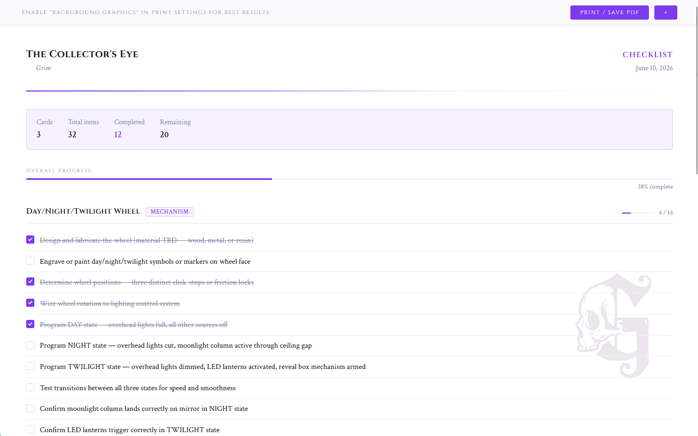
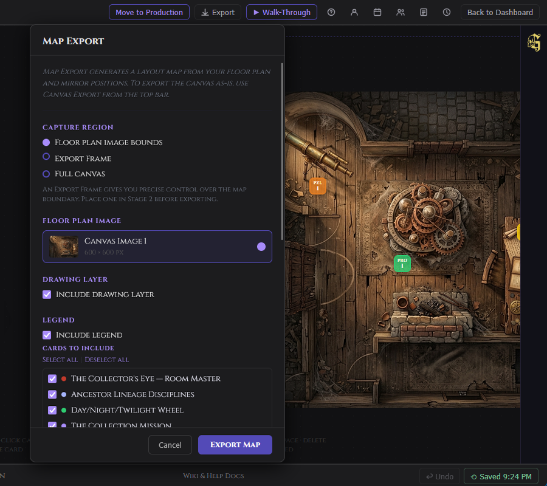
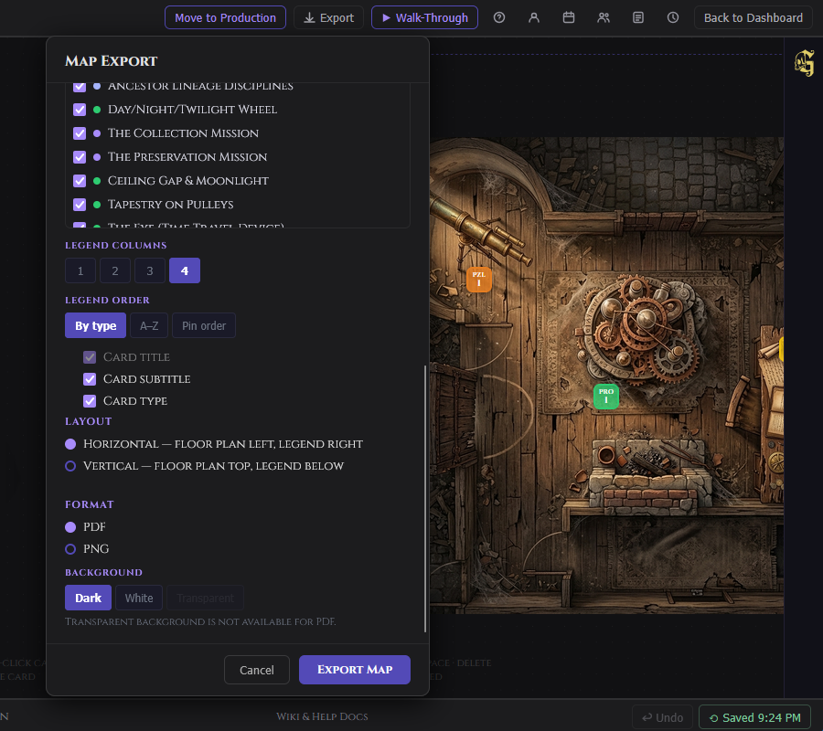

Exports
GrimFolio exports your project data as print-ready PDFs and raw JSON. Exports are available from two places: the Export button in the top bar from Stage 2, and the Export Hub widget in Stage 3 Production. All PDF exports open in a full-screen print preview overlay before downloading.
Export Formats
Every PDF carries a document header with the project name, export type, your company name if set in Account Settings, and the current date. A GrimFolio watermark appears on each page.
| Plan | Watermark behavior |
|---|---|
| Free | GrimFolio watermark on all pages. |
| Base Unlimited | GrimFolio watermark on all pages. |
| Pro | Toggle the watermark off in Account Settings → Appearance. |
| Studio | Replace the GrimFolio mark with a custom SVG logo. |
Checklist
A printable task list showing all checklist items across every card that has them. Cards without checklist items are excluded.
Summary stats at top: card count, total items, completed count, remaining count.
For each card:
- Card title and type
- Per-card progress bar showing done vs total
- Each checklist item with its checkbox state — checked items show a filled box, unchecked show an empty box

Use this for pre-show walkthroughs, tech checks, and production handoffs where the team needs a physical reference.
Budget
A full budget breakdown across every card that has budget lines. Cards without budget lines are excluded.
Summary stats at top: card count, total line items, grand total.
For each card:
- Card title and type
- Table: item name, quantity, unit cost, status, line total
- Card subtotal
- Budget cap if set, with remaining amount or over-by amount in red
Status labels: Planned, Ordered, Received, In Progress, Installed.
Grand total appears at the bottom of the document.

Use this when reviewing spend against plan, presenting to collaborators, or submitting a budget report.
Card Summary
A document-style overview of every card on the canvas. All cards are included even those without notes.
Summary stats at top: total card count, count with notes.
For each card:
- Card title and type
- Notes in full if any. Cards without notes show "No notes." in italics.
- Elements list if any are attached
Use this for early-stage documentation, venue walk-through packets, or sharing project structure with people who are not in GrimFolio.
Walk-Through Guide
A reference document that maps the canvas as a sequence. Every card appears with its outgoing connections shown explicitly, creating a printed version of the Walk-Through path.
Summary stats at top: card count, connection count, total checklist items, completed checklist items.
For each card:
- Card title and type
- Notes if any
- Elements list if any
- Checklist progress bar
- Outgoing connections: "Connects to [card name]" with path label shown in quotes when set

Use this as a show-night reference packet, a script substitute for actors or crew, or a guide for a client walk of the experience.
Inventory
An assignment-based view of all inventory items across cards. Only cards with at least one inventory assignment appear.
Summary stats at top: cards with inventory, total assignments.
For each card:
- Card title and item count
- Table: item name, category, unit, quantity used, quantity available
The Available column turns red when available quantity is less than the quantity in use, flagging potential supply gaps before build day.
Chat History
A full transcript of your Grim conversation for this project. Includes both Stage 2 and Production conversations if both exist.
Summary stats at top: total message count, earliest message date, latest message date.
Messages are grouped by day with date dividers. Each message shows the speaker (Grim or You), the time, and the full content. System notices appear as horizontal separators in the transcript.
Use this to hand off creative decisions to collaborators, review what was brainstormed, or archive the development conversation for a project.
Project Data (JSON)
Available from the Export Hub widget in Stage 3 only. Exports the raw project data as a JSON file and downloads immediately without opening a print preview.
The JSON contains your full project structure — zones, connections, pile items, crew, and shift arrays. This format is designed to be integration-ready for external tools.
Canvas Export
Canvas Export captures your Build canvas as a PNG or multi-page PDF. There are two modes:
Quick Export captures the full visible canvas at the current screen size as a PNG. No setup required — right-click the canvas and select Export Canvas, then Quick Export.
Frame Export uses Export Frames placed on the canvas to define specific regions. Each frame becomes a page. Right-click the canvas, select Export Canvas, then Export Frames to open the export modal. From the modal you can choose format (PNG or PDF), resolution, which frames to include, and layer visibility toggles including mirrors, drawings, background images, connections, and transparent background.
For full details on placing and configuring Export Frames see Canvas Export Frames in the Stage 2 documentation.
Map Export
Map Export generates a static image or PDF of your project floor plan with pins marking card locations and an optional legend. It is distinct from Canvas Export — Canvas Export captures the canvas as-is; Map Export composes a clean layout document from your floor plan image and mirror data.

Where to find it
| Location | How to access |
|---|---|
| Stage 2 | Top bar → Export → Map Export (top of the list) |
| Stage 3 | Export Hub widget → Map Export button |
Prerequisites
Before opening Map Export, you need at least one canvas image placed on the Stage 2 canvas. This becomes the base layer of the exported map. Cards with mirrors placed on the canvas appear as pins. Cards without mirrors appear in the legend only (if legend is enabled) with no pin on the map.
Export options
The Map Export modal walks through five sections in order.

Capture Region
Choose what area of the canvas becomes the map boundary.
| Option | When to use | Notes |
|---|---|---|
| Floor plan image bounds | Default. Map boundary matches the exact edges of the selected floor plan image. | Most common. |
| Export Frame | Use an Export Frame node placed on the canvas for precise boundary control. | If no Export Frame exists, this option is disabled with a hint to add one in Stage 2. If multiple frames exist, a dropdown lets you choose which one to use. |
| Full canvas | Automatically computes a bounding box around all mirror positions and the floor plan image, with padding. | Use when content or mirrors extend outside the floor plan image bounds. |
Floor Plan Image
Select which canvas image to use as the base layer. If only one image exists on the canvas, it is pre-selected. The image is rendered at its actual canvas position within the capture region — it does not stretch to fill the capture area.
Drawing Layer
A toggle controls whether canvas annotations made with the Drawing tool (lines, shapes, freehand, zone circles, text) are included in the export. On by default.
Legend
Toggle Include legend on or off. When on, the following options appear.
Cards to include — a checklist of all cards with mirrors in the capture region, plus cards with no mirrors (legend-only). All checked by default. Use Select all / Deselect all to bulk-toggle. Deselected cards are excluded from both the map pins and the legend.
Legend columns — 1, 2, 3, or 4 columns. Default is 4.
Legend order
| Option | How it sorts |
|---|---|
| By type | Groups cards by type. Type-group headers appear when 2 or more types are present. Alphabetical within each group. |
| A–Z | Alphabetical by card title, no grouping. |
| Pin order | Left-to-right, top-to-bottom by pin position on the map. Cards without pins appear at the end. |
Content toggles — Card title (always on), Card subtitle (toggle), Card type (toggle).
Layout — Horizontal places the legend to the right of the floor plan. Vertical places it below.

Format
| Setting | Options |
|---|---|
| Format | PDF or PNG |
| Background | Dark (#0d0d14, default) / White (printer-friendly, adapts legend text colors) / Transparent (PNG only — disabled for PDF) |
| Resolution | Standard 96 dpi / High 192 dpi / Print 300 dpi (PNG only) |
What gets rendered
The export composites layers in order, bottom to top.
- Background fill (or none for transparent)
- Floor plan image — positioned and scaled within the capture region
- Drawing layer — canvas annotations, if the Drawing Layer toggle is on
- Pins — rounded square badges in the card's type color, white border, white label. Label shows the card's mirror prefix and index (e.g. FX-1, PRO-1, or just 1 if no prefix is set)
- Legend (if enabled)
Header and footer
Every Map Export includes a full-width header and footer that match the style of GrimFolio's other export documents.
The header shows the project name and MAP EXPORT label on the first row, and the studio or company name (if set in Account settings) alongside the export date on the second row. A purple gradient rule separates the header from the map content.
The footer shows "Built with GrimFolio" on the left (or your company name if the GrimFolio branding toggle is off in Account → Appearance) and the project name alongside MAP EXPORT on the right.
Watermark
The Grim G mark appears at low opacity in the bottom-right corner of the export. If you have uploaded a company logo (Studio plan), your logo appears instead. The mark adapts to the background — a light version on dark and transparent exports, a dark version on white exports. Toggle the watermark off in Account → Appearance.
Notes
- Map Export runs entirely in the browser. No data is sent to a server during export.
- Cards in the pile that have no mirrors on the canvas do not appear on the map or in the legend.
- Anchor nodes are excluded from the map and legend.
- Export Frame nodes are excluded from all card-based exports (Checklist, Budget, Card Summary, Walk-Through, Inventory). They only affect Map Export when used as the capture region.
- The floor plan image is required. If no canvas image exists on the project, the modal shows an empty state with instructions to add one in Stage 2.
Hosted Exports
Hosted Exports publish a live, shareable URL for your project data. Anyone with the link can view the export — no GrimFolio account required. The URL is permanent until you delete the export.
Where to find it
| Location | How to access |
|---|---|
| Stage 2 top bar | Export menu → ⬡ Hosted Exports |
| Stage 3 Export Hub widget | ⬡ Hosted Exports button at the bottom of the widget |
| Map Export modal | ⬡ Publish as Hosted Export button in the footer (PNG format) |
Supported export types
| Type | What the viewer shows |
|---|---|
| Walk-Through Guide | Numbered card sequence with notes, elements, and type badges |
| Checklist | All checklist items grouped by card with checkbox state |
| Budget | Full budget breakdown with estimated vs. actual totals |
| Card Summary | Card grid with title, type, status, and notes |
| Map | The rendered floor plan map PNG, full-width |
Publishing
From the Hosted Exports modal, select the export type and click Publish. GrimFolio takes a snapshot of the current project data and stores it. The snapshot is frozen at publish time — later edits to your project do not update the hosted page unless you publish again.
Map exports are published from the Map Export modal footer after configuring the map. Click ⬡ Publish as Hosted Export to generate the PNG and upload it. The export type is automatically set to Map.
Viewing and sharing
After publishing, the modal shows the public URL. Copy it and share with anyone. The viewer page at grimfolio.com/exports/[slug] is public and renders the snapshot in a clean dark-themed layout with a GrimFolio footer.
Managing hosted exports
The Hosted Exports modal lists all exports for the current project. Each row shows the export type, slug, view count, and publish date. Actions available per row:
- Copy URL — copies the public link to your clipboard
- Delete — removes the hosted export and its public URL immediately. The original project data is not affected.
Pro plan users see a usage meter showing how many of their 15 slots are in use across all projects.